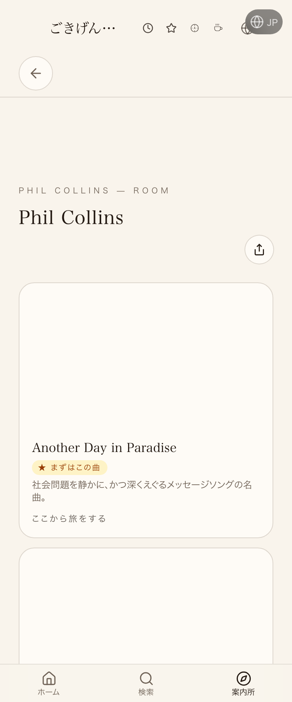
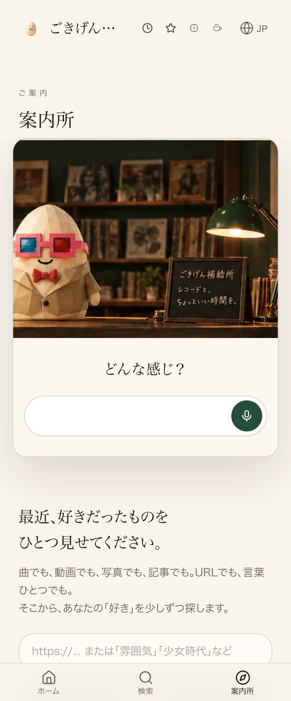

| 確認項目 | 結果 |
|---|---|
| Phil Collins In the Air Tonight(Cadbury Gorilla CM) | 反映済み |
| 玉置浩二 田園(サントリー企業CM) | 反映済み |
| TUBE シーズン・イン・ザ・サン(キリンびん生CM) | 反映済み |
| 松山千春 季節の中で(アーモンドチョコレートCM) | 本番未反映(ソースは正しい) |
| 中原めいこ 君たちキウイ(カネボウCM) | 反映済み |
| 郷ひろみ 2億4千万の瞳(国鉄CM) | 反映済み |
| 山口百恵 いい日旅立ち(国鉄キャンペーン) | 反映済み |
| 太田裕美 木綿のハンカチーフ(サントリーCM) | 本番未反映(ソースは正しい) |
| 佐野元春 SOMEDAY(JR東海CM) | 反映済み |
| 菊池桃子 卒業(資生堂CM) | 反映済み |
| 小田和正 たしかなこと(明治安田生命CM) | 反映済み |